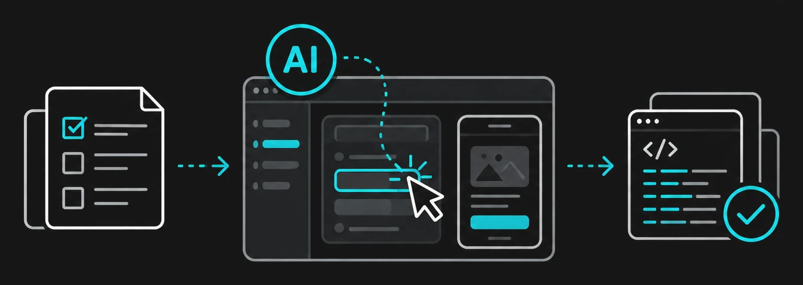

T Brand Solution
실행 자동화에서 지능형 검증까지 AI 기반 통합 품질 검증 자동화
T-VOC는 앱 스토어 리뷰를 수집 · 분석하고 VOC를 모니터링하는 솔루션입니다.
리뷰를 이슈로 연결하고, AI가 리뷰 유형을 분류하고 답변을 추천합니다.
앱 스토어 리뷰를 자동으로 수집하고 Jira 티켓을 자동으로 생성 · 연계합니다.
앱 스토어
리뷰
리뷰
자동 수집
Jira 티켓
자동 생성 · 연계
모인 리뷰는 AI가 유형별로 자동 분류하고,
리뷰에 맞는 답변을 추천해 VOC 대응을 지원합니다.

T-VOC는 독립적으로 운영하거나 T 브랜드 솔루션과 연계할 수 있으며, 추가 옵션으로 도입합니다.
세부 구성은 고객 요구사항에 따라 별도로 제안합니다.